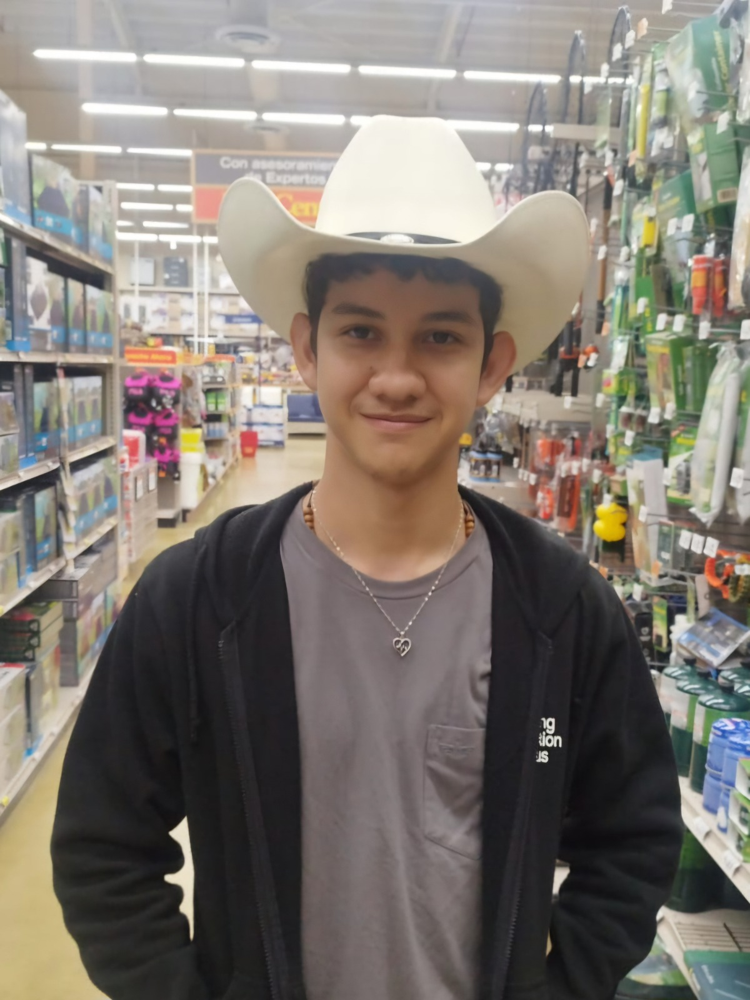

Sobre Mí
Mi nombre completo es José Emanuel Huertas Gómez. Nací el 23 de noviembre de 2004, en Coclé. Vivo en Penonomé con mis padres, mi hermana mayor, 3 perros y 2 gatas, aunque alquilo un apartamento en la ciudad mientas estudio. Me gusta jugar League of Legends, tocar guitarra, dibujar y trato de recuperar el hábito de la lectura.
Estudié en el Colegio San Agustín de Penonomé, donde adquirí mi gusto por la tecnología y la innovación. Ahí participé en varios concursos nacionales de robótica, adquiriendo interés por la programación. Elegí esta carrera porque ofrece un gran abanico de posiblidades de especialización, de que me gusta el enfoque sistemático y metodológico de la ingeniería de software, y, en un futuro, me gustaría especializarme en ciencia de datos.
Este soy yo:
Mi sitio web favorito: YouTube